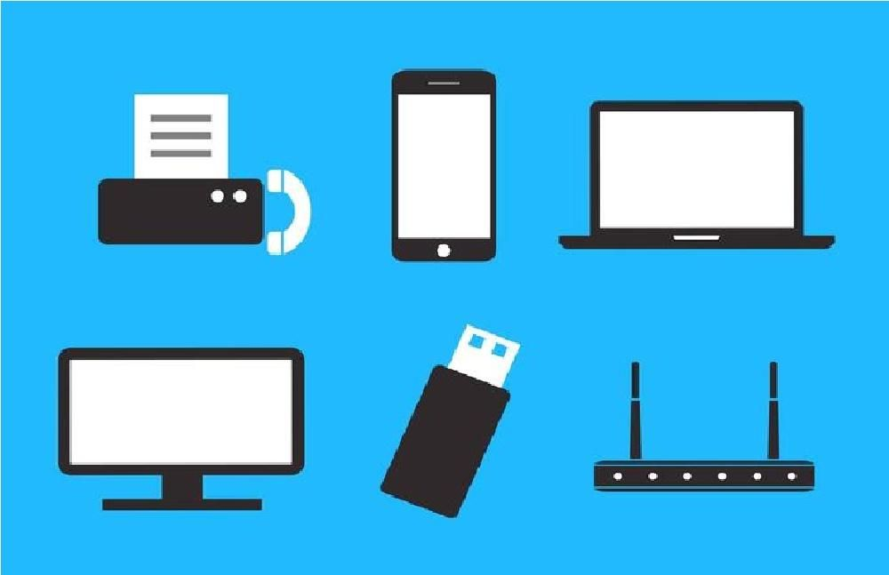

Tipos de cableado
El cableado es un elemento fundamental en la estructura de redes y comunicaciones, y existen diversos tipos de cableado para transmitir datos, voz y otros tipos de señales. Estos tipos de cableado varían en términos de capacidad de transmisión, aplicaciones específicas y características físicas.


El cable coaxial es un tipo de cable que se utiliza para transmitir señales eléctricas, especialmente en aplicaciones de telecomunicaciones y transmisión de datos. Se compone de varios componentes que trabajan juntos para proporcionar una transmisión de señal eficiente y protegerla de interferencias externas. A continuación, te explicaré los componentes y el funcionamiento básico de un cable coaxial:
Núcleo conductor central: En el centro del cable coaxial se encuentra un conductor metálico sólido o trenzado. Este conductor transporta la señal eléctrica que se desea transmitir. En aplicaciones de cable coaxial, este conductor suele estar hecho de cobre o aluminio, y la elección del material depende de la aplicación específica.
Aislante dieléctrico: Alrededor del núcleo conductor central se encuentra una capa de material aislante llamada dieléctrico. Este dieléctrico tiene la función de mantener una separación constante entre el núcleo conductor y la malla exterior. El dieléctrico evita que la señal eléctrica se escape y ayuda a mantener una impedancia característica constante en el cable.
Malla metálica o blindaje: Sobre el aislante dieléctrico se coloca una malla metálica que actúa como blindaje. Este blindaje ayuda a proteger la señal dentro del cable de interferencias externas y evita la emisión de señales que puedan causar interferencias en otros dispositivos cercanos. El blindaje también proporciona una vía de retorno para las corrientes de tierra y reduce la interferencia electromagnética.
Cubierta externa: La parte exterior del cable coaxial está cubierta por una capa aislante adicional, que generalmente es de plástico. Esta cubierta protege el cable y le da resistencia física, lo que lo hace adecuado para su uso en una variedad de entornos.
El funcionamiento básico del cable coaxial implica que la señal eléctrica viaje a lo largo del núcleo conductor central, rodeado por el dieléctrico que mantiene la separación constante entre el conductor central y la malla de blindaje. La malla de blindaje protege la señal de interferencias externas y evita que la señal se irradie hacia el entorno.
Los cables coaxiales se utilizan en diversas aplicaciones, como la transmisión de señales de televisión por cable, conexiones de Internet de banda ancha, sistemas de videovigilancia, comunicaciones de radiofrecuencia, entre otros. Hay diferentes tipos de cables coaxiales diseñados para aplicaciones específicas, y la elección del cable adecuado dependerá de los requisitos de la aplicación y las características necesarias de transmisión de la señal.